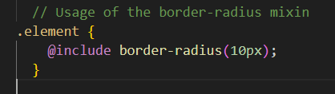
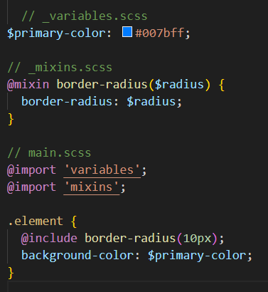

Mixins and Partials are concepts commonly used in programming and web development, particularly in the context of CSS (Cascading Style Sheets) and preprocessors like Sass and LESS. Let's look at each of them separately
1.Mixins: Mixins are reusable blocks of code that can be included in multiple places within a codebase. They are especially prevalent in CSS preprocessors like Sass and LESS but can also be found in other programming languages and frameworks. Mixins allow you to define a set of styles or functionality in one place and then "mix them in" or apply them to different elements or components throughout your code.
In Sass, a mixin is created using the @mixin directive, followed by a name and the styles or functionality you want to encapsulate:
After defining a mixin, you can include it in your styles using the @include directive:
When the Sass file is compiled, the @include statement will be replaced with the styles defined in the mixin, effectively applying the border radius of 10 pixels to the .element class.
Partials: Partials are a way to split your CSS or Sass code into smaller, modular files. They are particularly useful for organizing large codebases, making maintenance easier, and avoiding long, monolithic stylesheets. In Sass, partial files are denoted by filenames starting with an underscore _.
For example, you can have a partial file _variables.scss that contains all your variable declarations, another partial file _mixins.scss that holds your mixin definitions, and so on. These partial files do not get compiled into separate CSS files themselves; instead, they are meant to be imported into a main Sass file using the @import directive.
When you compile the main.scss file, it will include the contents of the _variables.scss and _mixins.scss files, and the resulting CSS will have the desired styles and mixins applied.
Keep in mind that starting from Sass 5 (since Dart Sass 2.0.0), the @import directive is being phased out in favor of @use and @forward to create more efficient, scoped, and modular code.